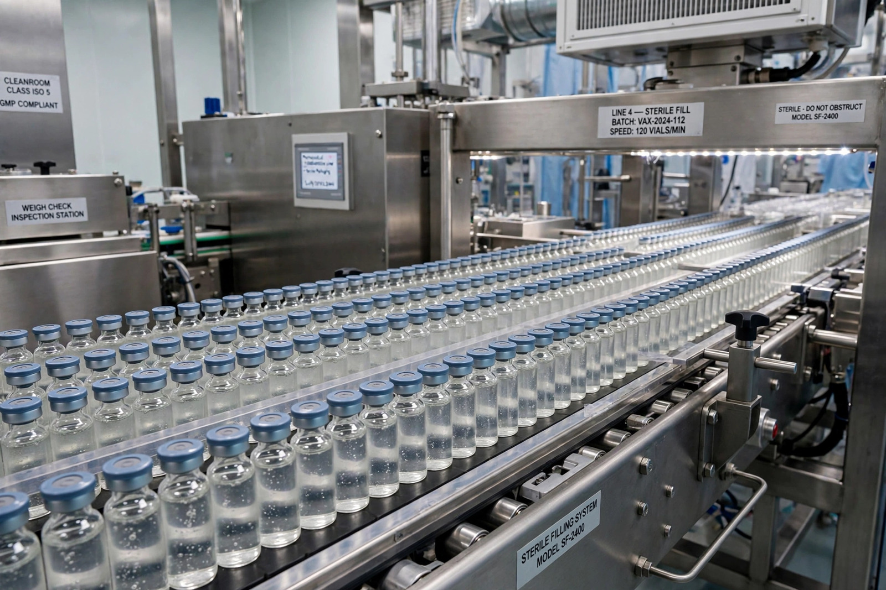

Pharmaceutical industry
From Wikipedia, the free encyclopedia

The pharmaceutical industry discovers, develops, produces and markets medications (pharmaceuticals) for human and veterinary use. A global industry of roughly US$1.5–1.6 trillion in annual revenue, it is centred on large research-based multinationals ('Big Pharma' — Pfizer, Johnson & Johnson, Roche, Novartis, Merck and others), the generics and biosimilars sector (Teva, Sandoz, Indian manufacturers), and biotech; its products are among the most regulated and most profitable of any industry, and among the most contested.
Development economics
Bringing a new drug to market takes a decade-plus and — by industry-favoured estimates — over US$1–2 billion capitalised cost per approval, with most candidates failing in trials; patents and regulatory exclusivities fund the model, and pricing (especially in the US) funds its critics. Blockbusters (Lipitor, Humira — the best-selling drug in history — the GLP-1 agonists) concentrate returns; orphan-drug incentives skew R&D toward rare diseases while antibiotic innovation starves.
Politics and crises
The industry's ledger includes vaccines and antiretrovirals that changed history and the opioid epidemic (Purdue Pharma's bankruptcy), thalidomide (which created modern drug regulation), pricing scandals and COVID-19's vaccine triumph-and-inequity. Access-to-medicines campaigns, patent pools and pandemic-preparedness treaties are the running negotiation between the industry's incentives and public health.